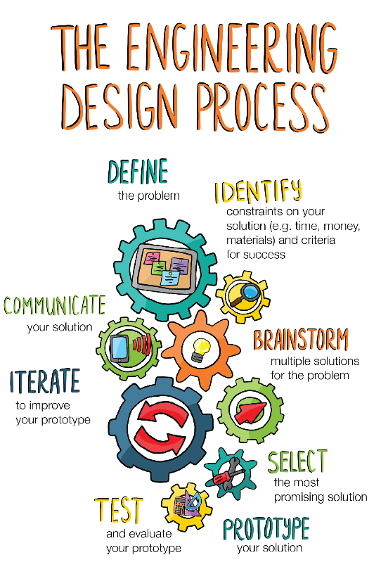

---
redirect_from:
  - "/getting-started/principles-of-design"
title: |-
  Principles of Engineering Design
pagenum: 2
prev_page:
  url: /Getting-Started/Introduction.html
next_page:
  url: /Getting-Started/Units-and-Dimensional-Analysis.html
suffix: .md
search: design ecological engineering process sup steps href problems constraints style john documentation hr provide key solutions effective client div img span org strategies authors boltesup gerrad jonessup desiree tullossup selkersup supbiological department oregon state university designprocessstepsdesign anbspnbspnbsp communicationcommunication fundamentals fundamental practice below guidance approaching including brief discussion stepwise flowchart identify guidelines produced various creative identifies develops overcome those address problem cost should not only work must meet needs based accepted analyses methods consider economic social ethical dimensions communicated manner designs often incorporate additional related sustainability system resilience need variety ecosystem services geospatial nature intrinsic complexity variability associated systems figure right

comment: "***PROGRAMMATICALLY GENERATED, DO NOT EDIT. SEE ORIGINAL FILES IN /content***"
---

    <main class="jupyter-page">
    <div id="page-info"><div id="page-title">Principles of Engineering Design</div>
</div>
    <div class="jb_cell">

<div class="cell border-box-sizing text_cell rendered"><div class="inner_cell">
<div class="text_cell_render border-box-sizing rendered_html">
<h1 id="Design-Strategies-for-Ecological-Engineering">Design Strategies for Ecological Engineering<a class="anchor-link" href="#Design-Strategies-for-Ecological-Engineering"> </a></h1><p>Authors: John Bolte<sup>1</sup> Gerrad Jones<sup>1</sup>, Desiree Tullos<sup>1</sup>, John Selker<sup>1</sup></p>
<p><sup>1</sup>Biological &amp; Ecological Engineering Department, Oregon State University</p>
<p>[<a href='#DesignProcessSteps'>Design Process - Steps]</a>&nbsp;&nbsp;&nbsp;
[<a href='#Communication'>Communication and Documentation</a>]</p>
<hr></hr><h2 id="Fundamentals">Fundamentals<a class="anchor-link" href="#Fundamentals"> </a></h2><p>Design is fundamental to the practice of ecological engineering.  Below, we provide some guidance on approaching design problems in ecological engineering, including a brief discussion of design process, a stepwise flowchart to identify key steps in the process, and guidelines for documentation produced at various steps in the process.<br>
Design is a creative process that identifies problems and constraints, develops solutions to overcome those constraints and address the problem in a cost-effective way.  These solutions should not only work, they must meet the needs of the client, be based on accepted engineering analyses and methods, consider economic, social, and ethical dimensions of the design, and be communicated to the client in an effective manner.</p>
<p>Ecological engineering designs often incorporate additional constraints related to sustainability, system resilience, and need to provide a variety of ecosystem services, the geospatial nature of many ecological engineering problems, and the intrinsic complexity and variability associated with ecological systems.</p>
<p>The figure to the right provides a nice general summary of the design process, identifying important steps and concepts.  Some of the key steps in this generalize design process are:</p>
<div style='float:right;text-align:center'>
    </img>
    <span style='font-size:small'>
    [from <a href='kqed.org/engineeringforgood'>kqed.org/engineeringforgood </a>]
    </span>
</div>
</div>
</div>
</div>
</div>

 


    </main>
    